Electricista residencial e industrial en Caracas
Instalaciones, reparaciones y mantenimiento eléctrico para hogares, comercios e industrias de la Gran Caracas: tableros, cableado, iluminación, puesta a tierra, plantas de emergencia y motores, con trabajo limpio, probado y presupuesto por escrito.

Señales de que necesita un electricista
Casi toda falla eléctrica avisa antes. Si identifica alguna de estas, conviene actuar a tiempo.
Servicios eléctricos para hogares, comercios e industrias
Cada servicio tiene su página con el detalle de lo que incluye y cómo trabajamos.
Tableros eléctricos
Montaje, ampliación y reemplazo de tableros y breakers, con circuitos rotulados.
Instalaciones residenciales
Cableado nuevo o reforma en casas y apartamentos, con circuitos independientes y tierra.
Instalaciones industriales
Fuerza y control para galpones, fábricas y talleres, con alimentación trifásica y motores.
Puesta a tierra y protección
Pozos y mallas de tierra, medición de resistencia y protección contra sobretensiones.
Plantas eléctricas y UPS
Plantas de emergencia, transferencia automática (ATS) y UPS para no quedarse sin energía.
Iluminación LED
Luminarias LED interiores y exteriores, fachadas, estacionamientos y naves.
Mantenimiento y diagnóstico
Revisión de tableros, termografía, mediciones y correcciones antes de que haya una falla.
Emergencias eléctricas 24/7
Cortocircuitos, breakers que no suben, olor a quemado, falta de fase o fallas en el tablero.
Atendemos toda la Gran Caracas
Cinco municipios, cada uno con sus propias necesidades. Elija el suyo para ver qué trabajos son más frecuentes.
Libertador
Sabana Grande, El Paraíso, San Bernardino, Los Chaguaramos…
Ver zona →Municipio Chacao (Miranda)Chacao
Altamira, Los Palos Grandes, La Castellana, El Rosal…
Ver zona →Municipio Baruta (Miranda)Baruta
Las Mercedes, Prados del Este, La Trinidad, Colinas de Bello Monte…
Ver zona →Municipio El Hatillo (Miranda)El Hatillo
Pueblo de El Hatillo, La Lagunita, Oripoto, Alto Hatillo…
Ver zona →Municipio Sucre (Miranda)Sucre
Petare, Los Dos Caminos, Los Cortijos de Lourdes, Boleíta…
Ver zona →Seguridad eléctrica en el hogar y en la industria
🏠 Residencial
- Cableado completo y reformas en casas y apartamentos
- Cambio de tableros, breakers y tomacorrientes con tierra
- Circuitos exclusivos para aires acondicionados y cocinas
- Iluminación LED interior, exterior y de jardines
- Planta o UPS de respaldo con transferencia automática
🏭 Industrial
- Tableros de distribución y centros de control de motores
- Alimentación trifásica según la tensión de la planta
- Variadores de frecuencia, arrancadores y protecciones
- Bandejas portacables, canalización y puesta a tierra
- Mantenimiento preventivo con termografía y mediciones
De la primera visita a la entrega, sin sorpresas
- 1
Visita y diagnóstico
Revisamos la instalación, la carga y las fallas, y definimos lo que realmente hace falta.
- 2
Presupuesto por escrito
Alcance, materiales y plazos definidos antes de comenzar cualquier trabajo.
- 3
Ejecución ordenada
Instalación con materiales certificados y el menor impacto posible en su espacio.
- 4
Pruebas y entrega
Mediciones, verificación de protecciones y rotulado de tableros antes de dejar todo operativo.
- 5
Soporte posterior
Mantenimiento preventivo y atención ante cualquier falla, incluso fuera de horario.
Aprenda a cuidar su instalación
Información práctica para detectar problemas a tiempo y tomar mejores decisiones.
Señales de que su instalación necesita revisión
Breakers que saltan, olor a quemado, tomas calientes: qué significan y cuándo llamar.
Leer →Guía · 4 min¿Cuándo cambiar el tablero eléctrico?
Cómo saber si el tablero ya no es suficiente o dejó de ser seguro.
Leer →Guía · 3 minQué incluye una visita técnica eléctrica
Qué se revisa, cómo prepararla y qué recibirá al final.
Leer →Guía · 5 minSeguridad eléctrica en casa
Hábitos y protecciones básicas para prevenir descargas e incendios en el hogar.
Leer →Lo que recibe al terminar el trabajo
- Instalación probadaVerificamos tensión, protecciones y funcionamiento antes de entregar.
- Circuitos rotuladosCada breaker queda identificado con el área o equipo que alimenta.
- Explicación claraLe decimos qué encontramos, qué hicimos y qué conviene revisar a futuro.
Resolvemos sus dudas antes de empezar
¿En qué zonas de Caracas trabajan?
En toda la Gran Caracas: Libertador, Chacao, Baruta, El Hatillo y Sucre. Escríbanos por WhatsApp con su urbanización o sector y confirmamos disponibilidad.
¿Atienden emergencias eléctricas?
Sí, las 24 horas: cortocircuitos, breakers que no sostienen, olor a quemado, falta de fase o fallas en el tablero. Si huele a quemado, baje el breaker principal y escríbanos.
¿Trabajan en hogares y en industrias?
Sí. Hacemos desde reformas de apartamentos y cambio de tableros hasta alimentación trifásica, centros de control de motores y mantenimiento en plantas industriales.
¿Cuánto cuesta una instalación o reparación?
Depende del alcance, la carga y los materiales. Hacemos una visita técnica y entregamos un presupuesto por escrito antes de empezar; no iniciamos trabajos sin su aprobación.
¿Instalan plantas eléctricas y UPS?
Sí. Dimensionamos e instalamos plantas de emergencia con tablero de transferencia automática (ATS), UPS y bancos de baterías para hogares, comercios e industrias.
¿Cómo se inicia una cotización?
Escríbanos por WhatsApp o use el formulario de contacto con una breve descripción del problema o proyecto y su zona. Coordinamos una visita técnica.
Solicite su cotización y deje su instalación eléctrica segura.
Cuéntenos qué necesita y su zona dentro de la Gran Caracas. Coordinamos una visita técnica y le entregamos un presupuesto por escrito antes de empezar.